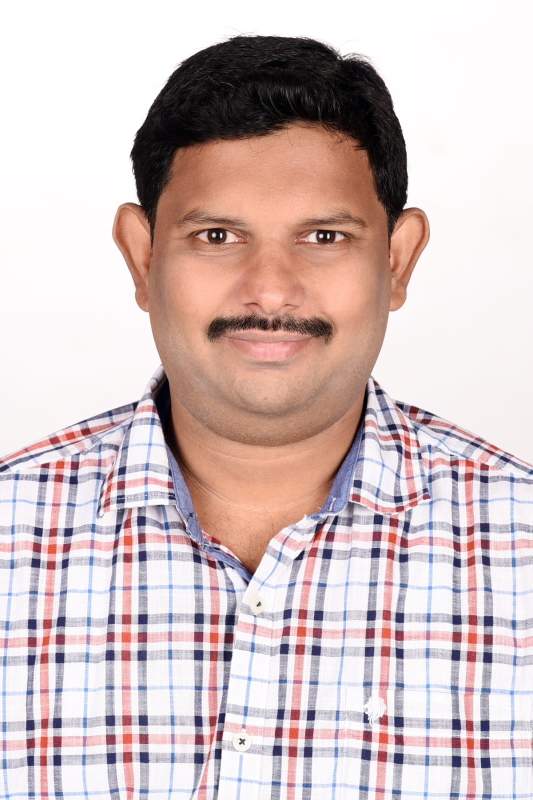

Elite QA Automation Engineer
& Digital Quality Strategist
I help organizations ship faster with stable releases, scalable test automation, API reliability, and measurable product quality improvements.

October 2022 - Present
To test both functional and non-functional requirements including automation testing of API, UI, UX, and automation testing. Created test cases, scenarios, and test data. Performed in Functional, Regression, and Smoke Testing. Logging the defects on the Jira defect tracking tool. Using the Rest Assured for testing the Resting services involving the JSON format. Using the Postman to test the API test cases.
May 2021 - September 2022
To test both functional and non-functional requirements including automation testing of API, UI, UX, Graphql, and automation testing. Created test cases, scenarios, and test data. Prepare the Test Cases for the Post Graphql requests. For API testing and functional testing, the automation script was created using Selenium Web Driver, Gradle, and Jenkins.
February 2020 - April 2021
Modified the Test Scripts using the python language for Bug fixing. Execution of the test cases and generation of the logs. Analyzing the logs to find the failures and fixing the logs in case of an improper fix. Demonstrated proof of concept ideas with prototypes to stakeholders. Creation of test case-specific and resource-specific files in the JSON format.
July 2011 - April 2015
Design and develop web applications and conduct unit testing. Used HTML/CSS and Javascript.